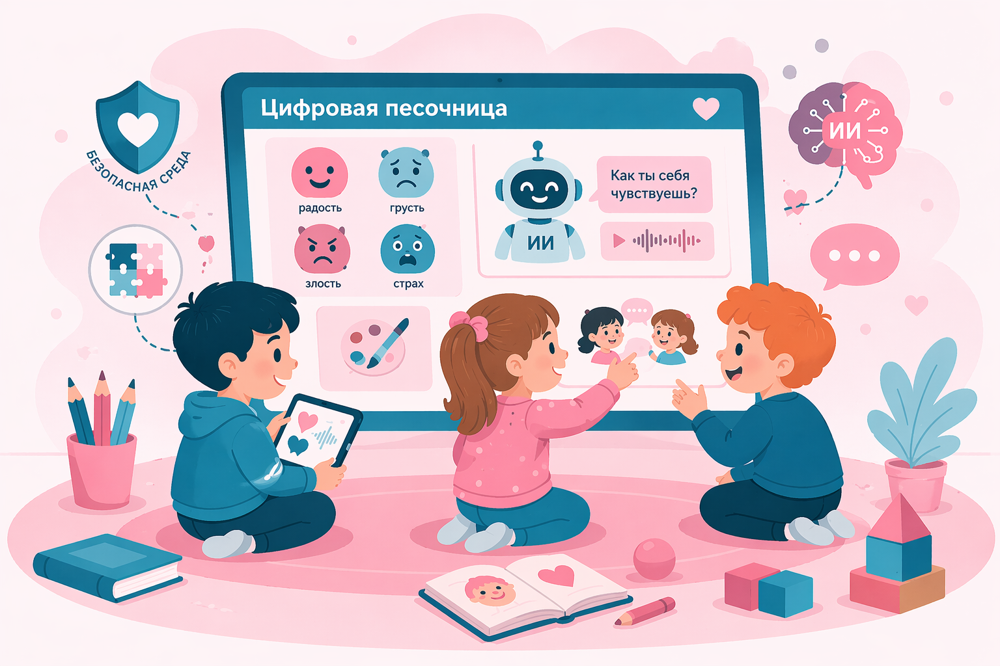

Цифровая песочница: Мир, где особенные дети учатся понимать себя и других!

Мы верим, что каждый ребенок может научиться понимать свои эмоции и находить друзей. Наша «Цифровая песочница» — это безопасное пространство, где через игру и современные технологии мы помогаем детям сделать первые и самые важные шаги в мир общения.
Знаете ли вы?
Новости и обновления
Анонс: Открытое занятие «Путешествие в страну Эмоций»
Приглашаем родителей на открытое занятие! Посмотрим, как дети знакомятся с эмоциями через игру и цифровые форматы, обсудим результаты и ответим на вопросы.
Дата: 25 марта в 17:00Идеи и находки
Чем занимались на этой неделе: рисовали грусть и радость пальцами в виртуальном песке, собирали «Эмоциональный куб», придумывали конец истории про обиду и примирение.
Планы
В апреле запускаем цикл занятий для младшей группы. Готовим памятку для родителей «Как говорить с ребенком об эмоциях дома». Следите за обновлениями!
Истории успеха
Дима, 9 лет, после занятий в «Цифровой песочнице» впервые смог попросить игрушку словами. Сейчас он использует короткие фразы и ждет ответа — для нас это победа!
Говорят дети
На занятии спрашиваем: «Что делать, если друг загрустил?» Ваня, 8 лет: «Поделиться машинкой», Алиса, 10 лет: «Обнять тихонько», Егор, 7 лет: «Позвать играть».
Что почитать специалисту
Делимся полезными материалами: статьи о развитии EQ и памятка «5 игр на распознавание эмоций для занятий с детьми с УО».